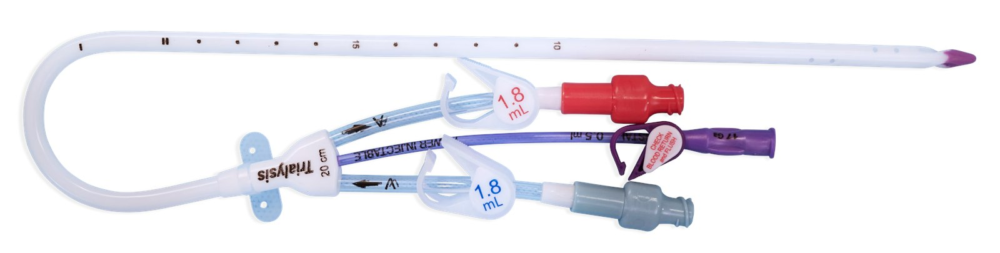
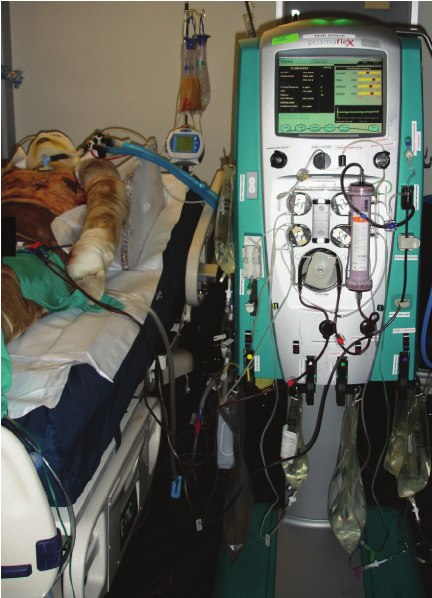
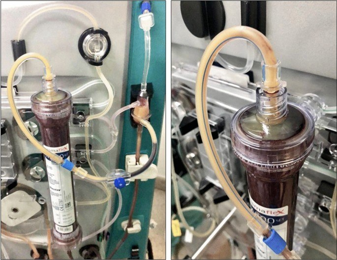
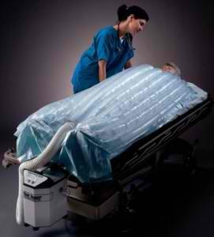

Day 2 · Topic 3
Acute Kidney Injury
Things to Bring Forward
Earlier Content This Topic Builds On
- Oliguria and azotemia: what each means.
- BUN and creatinine: the big labs. What they mean, and what affects them.
- Function of the kidneys: what the kidneys are responsible for.
- Acid-base balance, blood pressure regulation, RBC production: the kidneys' part in each.
- Pre-renal, intrarenal and post-renal causes: the three kinds of cause of AKI.
- The renal diet: the dietary considerations for a patient with kidney problems.
- Intermittent hemodialysis (IHD): how it works, and its complications, disequilibrium syndrome among them.
- Chronic kidney disease (CKD) and end-stage renal disease: why each manifestation of kidney disease happens. They are the same in AKI and CKD.
The Kidneys in Critical Illness
The kidneys are the primary regulator of the body's internal environment: fluid and electrolyte balance, and metabolic waste and toxin elimination. The excreter.
Why Kidney Injury Is So Common in the Critically Ill
- They take 20 to 25% of cardiac output: highly affected by changes in cardiac output and blood pressure. Tons of tiny vessels respond to them.
- They filter the ICU's nephrotoxic meds: antibiotics, contrast dye, high doses. Poorly perfused, and asked to work harder.
- Dehydration: as a main driver of fluid and electrolyte balance, they are highly affected by fluid balance.
What Fails When the Kidneys Fail
| Function | Normally | When the Kidneys Fail |
|---|---|---|
| Potassium | Primarily responsible for excreting potassium. | Potassium builds up. Be very careful with it. |
| Blood pressure regulation | A blood pressure regulator: home of the RAAS (renin-angiotensin-aldosterone system). | Alterations in blood pressure regulation. |
| RBC production | Secrete erythropoietin. | No erythropoietin: anemia. A longer-term effect. |
The kidneys' part in acid-base balance is taught in the Renal review
The RAAS, step by step, is taught in the Renal review
Acute Kidney Injury (AKI)
A sudden decline in kidney function that causes fluid, electrolyte and acid-base imbalances.
| Primary Feature | What It Is |
|---|---|
| Azotemia | The buildup of nitrogenous waste products. Seen in the BUN and creatinine. |
| Oliguria | Lack of urine output. Normal output is about 0.5 mL/kg/hr: typically 30 mL/hr for an average person, down to 25 for a really small person. |
Causes
| Cause | What to Know |
|---|---|
| Pre-renal |
|
| Intrarenal |
|
| Post-renal |
|
![Diagram titled Causes of Acute Renal Failure. The aorta, renal arteries, kidneys, ureters, bladder, prostate and urethra, with three numbered sites. 1, prerenal, at the renal artery: a sudden and severe drop in blood pressure or interrupted blood flow to the kidneys. 2, intrarenal, in the kidney: direct damage by inflammation, toxins, drugs, infection or reduced blood supply. 3, postrenal, along the ureter, bladder and prostate: sudden obstruction of urine flow from an enlarged prostate, kidney stones, bladder tumor or injury.](images/day2-acute-kidney-injury/causes-of-aki.jpg)
The three kinds of cause, and the most common, are taught in the Renal review
Onset and Prognosis
Onset
- Rapid: hours to days.
- Several hours of really poor perfusion and the kidneys take an immediate hit: no urine output, and a bump in BUN and creatinine.
- That is an AKI, even when it needs less intervention and never becomes months of care or CKD.
- Examples: a lot of blood lost in surgery or trauma, acute heart failure.
Prognosis
- Reversible. Rehydrated and the problem solved, the kidneys can be repaired.
- Keys: early identification and treatment.
Signals to Monitor Closely and Notify
- A risk: a lot of blood lost in the OR, a big long surgery, a very nephrotoxic antibiotic, or several procedures with contrast dye while very dehydrated.
- And low urine output for several hours.
- Then: monitor the urine output and the BUN and creatinine closely, and mention them to the team.
Assessment
| Assess | What to Know |
|---|---|
| Blood pressure |
|
| Respirations |
|
| Uremia or azotemia |
|
AKI Interventions
| Intervention | What to Know |
|---|---|
| Address the cause |
|
| Diuretics |
|
| IV fluid replacement |
|
| Dietary management |
|
| Electrolytes |
|
Renal Replacement Therapy
The primary treatment for AKI: dialysis. Used when the other interventions are not working, or the AKI is getting more severe.
| Indication | Look For |
|---|---|
| Acidosis | An acid-base imbalance, typically acidotic, that needs correcting. |
| Hyperkalemia | The electrolytes on the labs. |
| Volume overload | Crackles, pulmonary edema, 2+ to 4+ pitting edema in the lower extremities. |
| Uremia | Rising BUN and creatinine. Level of consciousness changes that cannot be put down to anything else. |
How Dialysis Works
- Removes toxins and fluid through a semipermeable membrane. Works toward equilibrium, pulling solutes out of the blood: what the kidneys should be doing.
- Corrects uremia, azotemia and acidosis, and pulls fluid off.
- Settings: the rates of infusion, how much it pulls off, and what it pulls off. Managed by the renal or nephrology team.
- The nurse monitors the settings, with a basic understanding of what is going on.
- Monitor the indication for improvement, such as hyperkalemia and volume overload. BUN and creatinine should improve. Urine output may or may not.
Vascular Access
Temporary
Most common for AKI. A trialysis port, in the internal jugular.
Semi-Permanent
Tunneled catheters. The subclavian is kept for long-term or semi-permanent access.
Permanent
AV fistula.

Intermittent or Continuous Dialysis
Intermittent Hemodialysis (IHD)
- Patient: hemodynamically stable, typically on no drips for blood pressure. Can even be ventilated, with a lot going on.
- Pace: 3 to 4 hours at a time. Intense and harsh on the body.
- Where: the dialysis unit, or sometimes the bedside.
Continuous Renal Replacement Therapy (CRRT)
- Patient: fragile, such as with sepsis, a very unstable blood pressure, or a lot of blood lost. Often chosen for AKI for this reason.
- Pace: continuous. Much more gentle: the rate can be slowed down or sped up, with much more nuanced control.
- Where: the ICU only.
- Provides: ultrafiltration and diffusion, continuously. Does the work of the kidneys while the body heals.
- Indications: the same as IHD.
Is the Patient a Candidate for IHD?
- Blood pressure stable with no IV meds? Chronic PO meds do not count.
- Oxygen pretty stable on whatever device?
- Tolerating the usual things?
- If not: probably not a candidate for IHD.
Types of CRRT
- Slow continuous ultrafiltration (SCUF)
- Continuous venovenous hemofiltration (CVVH)
- Continuous venovenous hemodialysis (CVVHD)
- Continuous venovenous hemodiafiltration (CVVHDF)
IHD Complications
| Complication | What to Know |
|---|---|
| Hypotension |
|
| Dysrhythmias |
|
| Muscle cramping |
|
| Decreased PaO2 |
|
| Infection |
|
Disequilibrium syndrome and the other complications of hemodialysis are taught in the Renal review
IHD Nursing Responsibilities
Caring for a Patient on IHD
- Reassess the patient: tolerating IHD on Monday does not mean Wednesday. Fragility can come on very quickly: vitals, labs and oxygen change as the cause worsens or the meds change.
- Communicate with the team if the patient may not tolerate it today. They can pull less fluid off, or go slower.
- Labs before and after dialysis: often in the order, but clarify.
- No water-soluble meds before dialysis: often antihypertensives and sedation meds.
- An antihypertensive before dialysis: the blood pressure drops, then dialysis pulls more fluid off.
Drugs dialyzed out, and drugs that build up to toxic levels, are taught in the Renal review
CRRT Nursing Responsibilities
| Responsibility | What to Know |
|---|---|
| Know the parameters |
|
| Intake and output |
|
| Hemodynamic monitoring |
|
| Temperature |
|
| Filter clotting |
|
| Labs |
|



Long-Term Outlook
After an AKI
- Kidneys can recover: CRRT, or even a while on IHD, does not mean lifelong dialysis. Corrected quickly enough, the kidneys can be saved.
- Some develop chronic renal disease: lifelong IHD, or a kidney transplant.
AKI on Top of CKD
- Much higher risk for a further AKI with CKD or end-stage renal disease.
- Shows as a bump in BUN and creatinine from baseline. May need CRRT for a time.
- Harder to spot: urine output may be lower than healthy kidneys make, or none at all on dialysis at home.
- Monitor closely: BUN and creatinine, electrolytes, symptoms.